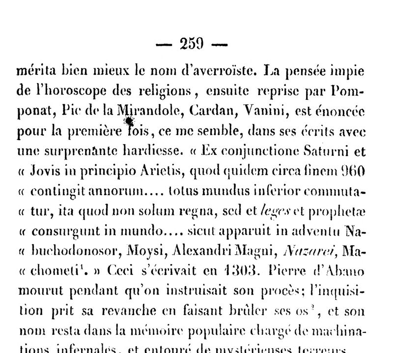

“Le fondateur de l’averroïsme padouan” (pp. 258–259)
French: Paris 1852, § II of the chapter on Padua, pp. 258–259, scans n278–n279, with Renan’s footnote 2.

It was above all the study of medicine that helped to found the reign of the Arabs at Padua. Pietro d’Abano deserves, in this respect, to be considered the founder of Paduan Averroism. His Conciliator of the Differences of Philosophers and Physicians already foreshadows the attempts of Zimara and Tomitano to reconcile Aristotle and Averroes. A strange thing, though! Pietro d’Abano knows neither the Colliget nor Averroes’s medical works: all his quotations from that author come from the philosophical works. But on other grounds, I mean his suspect reputation and doubtful orthodoxy, Pietro d’Abano far better deserved the name of Averroist. The impious idea of the horoscope of religions, later taken up by Pomponazzi, Pico della Mirandola, Cardano and Vanini, is stated for the first time, I think, in his writings, with astonishing boldness: “From the conjunction of Saturn and Jupiter at the beginning of Aries, which happens about every 960 years …, the whole lower world is changed, so that not only kingdoms but laws and prophets arise in the world …, as appeared in the coming of Nebuchadnezzar, Moses, Alexander the Great, the Nazarene, Mahomet.” This was written in 1303. Pietro d’Abano died while his trial was being prepared; the Inquisition took its revenge by having his bones burned, and his name remained in popular memory loaded with infernal machinations and surrounded with mysterious terrors.
(2) His tombstone can, however, be seen at the Eremitani, with this inscription: The ashes of Pietro d’Abano. Died in the year 1315, aged 66.
Original French
C’est surtout l’étude de la médecine qui contribua à fonder à Padoue le règne des Arabes. Pierre d’Abano mérite, sous ce rapport, d’être considéré comme le fondateur de l’averroïsme padouan. Le Conciliator differentiarum philosophorum et medicorum, prélude déjà aux essais de Zimara, de Tomitanus, pour mettre d’accord Aristote et Averroès. Chose singulière pourtant! Pierre d’Abano ne connaît ni le Colliget ni les œuvres médicales d’Averroès: toutes les citations qu’il fait de cet auteur sont empruntées à ses œuvres philosophiques. Mais à un autre titre, je veux dire par sa réputation suspecte et son orthodoxie équivoque, Pierre d’Abano mérita bien mieux le nom d’averroïste. La pensée impie de l’horoscope des religions, ensuite reprise par Pomponat, Pic de la Mirandole, Cardan, Vanini, est énoncée pour la première fois, ce me semble, dans ses écrits avec une surprenante hardiesse. « Ex conjunctione Saturni et Jovis in principio Arietis, quod quidem circa finem 960 contingit annorum…. totus mundus inferior commutatur, ita quod non solum regna, sed et leges et prophetæ consurgunt in mundo…. sicut apparuit in adventu Nabuchodonosor, Moysi, Alexandri Magni, Nazarei, Machometi. » Ceci s’écrivait en 1303. Pierre d’Abano mourut pendant qu’on instruisait son procès; l’inquisition prit sa revanche en faisant brûler ses os, et son nom resta dans la mémoire populaire chargé de machinations infernales, et entouré de mystérieuses terreurs.
(2) Sa pierre sépulcrale se voit pourtant aux Ermites, avec cette inscription: Petri Aponi cineres. Ob. ann. 1315, æt. 66.
| Naudé (1625), pp. 380–381 | Renan (1852), p. 259 | Lecky, ch. I, note 81 | |
|---|---|---|---|
| Death | 1305, during his trial, in his 80th year | during his trial; tombstone: 1315, aged 66 | “when he was about eighty … he died before the trial was concluded” |
| Posthumous sentence | a dummy of straw or wicker burned in the square of Padua | his bones burned | “the inquisitors were obliged to content themselves by burning his image” |
Lecky follows Naudé on both points. For d’Abano himself see Pietro d’Abano.
Further down the rabbit hole
Sources that Lecky cites in the notes next to the ones that cite this page.
- Naudé, Apologie pour tous les grands personnages qui ont esté faussement soupçonnez de magieA librarian clears the great men of magic: Pope Sylvester, Pietro d’Abano, Agrippa
- Sprenger, Malleus MaleficarumThe witch-hunters’ handbook of the fifteenth century
- Paramo, De origine et progressu officii sanctae inquisitionisWhy the dead are tried for heresy
- Blanqui, Histoire de l’économie politique en EuropeHow medieval kings policed luxury, and what Florence spent
- Garinet, Histoire de la Magie en FranceA history of magic in France, from the Frankish kings to the author’s own day
- Michelet, La SorcièreHow many witches were burnt, and when the last: Michelet gives two answers, and Lecky takes one from each


Backlinks
Every place in Rationalism in Europe that links to this page (generated automatically when the site is built).